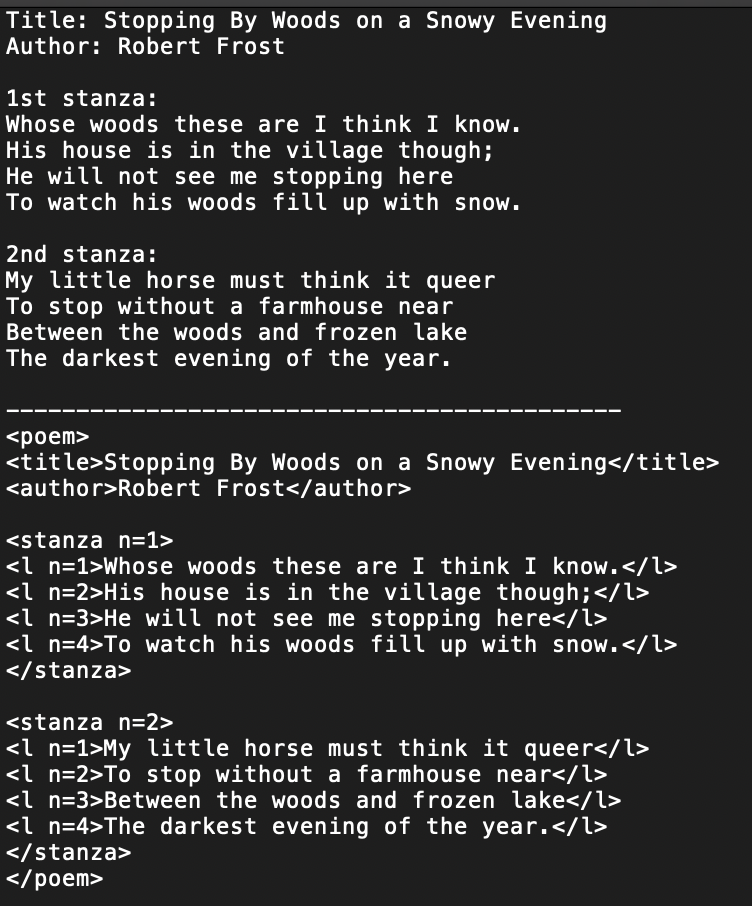

CBW

From 2018 to 2023 I was Project Manager of Collective Biographies of Women (CBW), a digital project led by PI Alison Booth. The project compiles, connects, and analyzes a robust and partially complete set of books in its eponymous genre: namely, a collection which contains biographies of at least two (though usually many more) women. While the long-running project initially focused on compiling a digital bibliography, more recently we have leaned into the analysis of biographies, through a method which will be explained below.
I have learned many, many skills on this project. I have strengthened my technical skills in XML by compiling many biographies and their analyses through it. I have come to a deeper understanding of version control by working robustly with Git, maintaining a repository with the various ad hoc scripts I've written for CBW over the years. And I've coded those scripts through Python, refreshing the coding skills I developed in undergrad while keeping up with the latest features of the language.
More importantly, however, I've learned how to effectively project manage in the digital humanities—how to direct, train, and delegate on the particular tasks that our discipline covers. Versatility, I've found, is the most important skill for a project manager. I've deeply enjoyed learning how to communicate the intersection between the humanities and intricate programming details to people at all levels of expertise--from tenured CS professors to people who have never written a line of code. I've also thought some about what it means to be a graduate student project manager in particular, having presented a brief talk on the complications of doing so (being contingent labor, existing in a mini-hierarchy with your peers) at the Digital Humanities Summer Institute.
Project Management and BESS
As PM, I trained and directed a team of research assistants to use XML. My training techniques involve learning technical skills intuitively before learning them formally. That is, before instructing new RAs on the precise syntax of XML, I made sure they had a basic understanding of what the system of tags was meant to represent. To do this, I use the example of a poem marked up in XML to reflect an already underlying structure: I generally show them the top half of the image below, before turning it into the bottom half. This exercise helps teach core XML concepts, like nested tags, elements, and attributes.

The ultimate goal of learning XML was to construct implicit readings of biographies through markup language. We performed narratological analyses via a system we call BESS (Biographical Elements and Structure Schema). In layman terms, BESS is a well-organized system of annotations. In more technical terms, it is a stand-alone markup schema. Basically, we go through every paragraph of a biography and ask certain questions about it: What events occur? What discursive maneuvers are used by the author? What terms are used to describe the subject? What themes (or "topoi") are alluded to in it? What stage of the subject's life is under discussion here? Our answeres to these questions compose any given paragraph's markup. I have blogged about BESS here and written the aforementioned scripts to facilitate BESS analysis at every step of the process here.

I train research assistants—mostly graduate students in English, but also some undergraduates. A partial list of the RAs at UVA who I've trained, directed, and had the pleasure of working with is below:
- Isabel Bielat
- Mikki Stacey
- Kaylee Lamb
- Zaina Ujayli
- Ren Capucao
- Emily Chang
- Paige Hillman
- Marissa Herzig
- Hanna Rosenberg
- Kathy Chen
- Mackenzie Daly
- Yichu Wang
- Anna Lee
Victorian Studies
At a more applied level, BESS is a vital building block to performing what we call "mid-range reading." I wrote about this method in a essay in
Victorian Studies, for an issue that also included a contribution by Alison Booth and Isabel Bielat, two other team members on CBW. The essay looks at "co-occurrences" of BESS values: tags in BESS that occur in the same paragraph as each other. I looked at co-ocurrences that happened frequently, and also co-occurrences that happened surprisingly infrequently. In either case, I was particularly interested in how race, ethnicity, and Empire (BESS topoi) are persistently described in metaphorical and figurative terms (BESS discourse). The paper not only relays these conclusions but serves as a case study for the method of mid-range reading: the claims made are dependent both on a discursive, traditional understanding of the text
and the quantitative data of BESS.